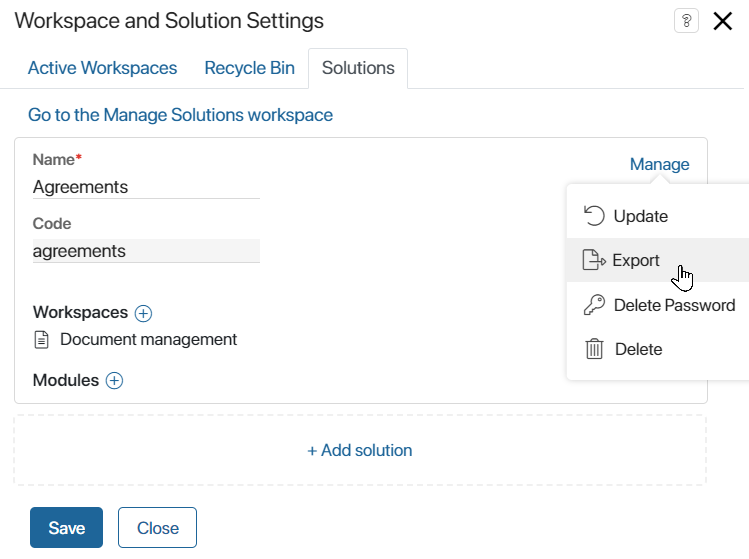
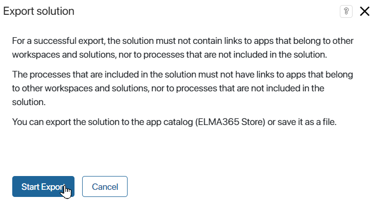
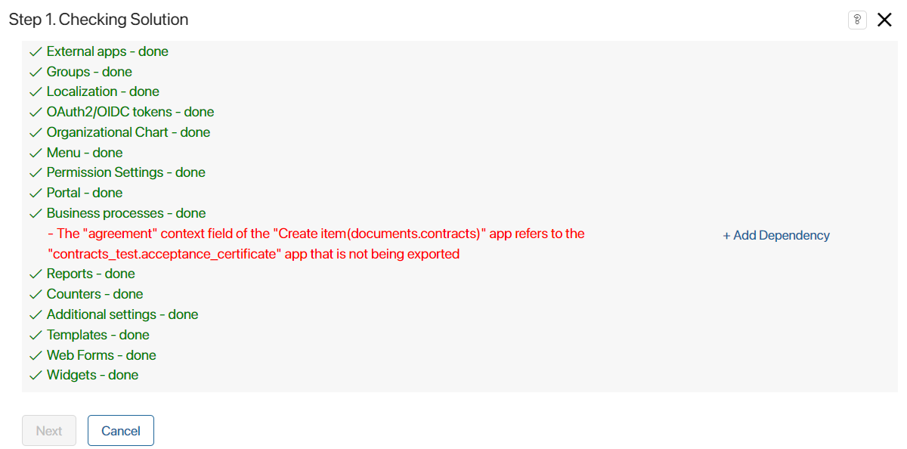
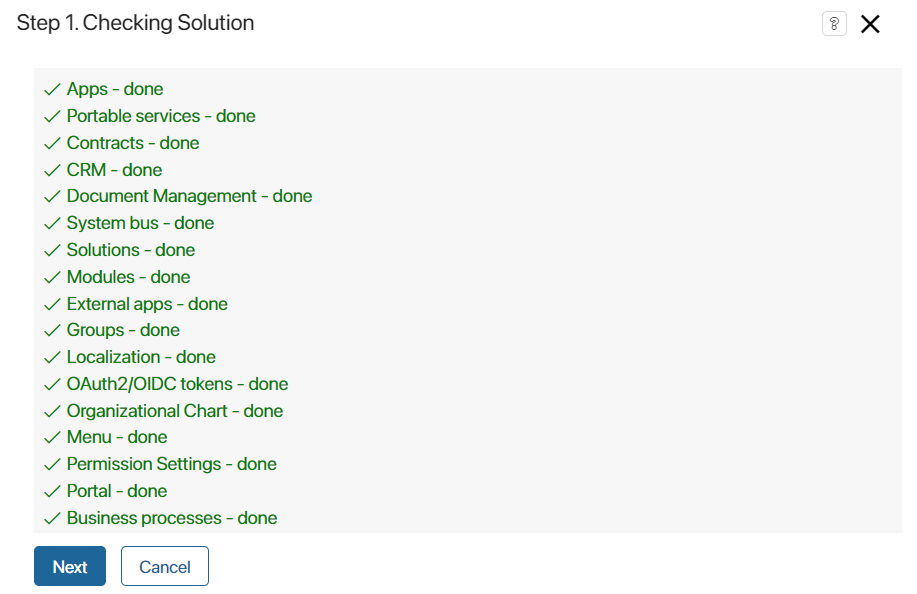
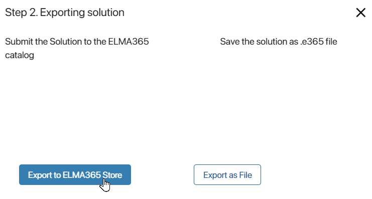
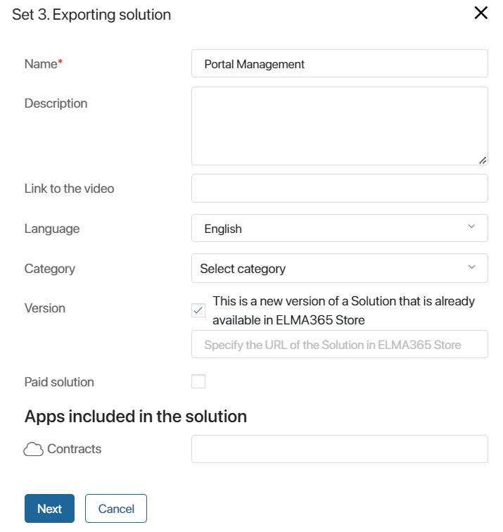
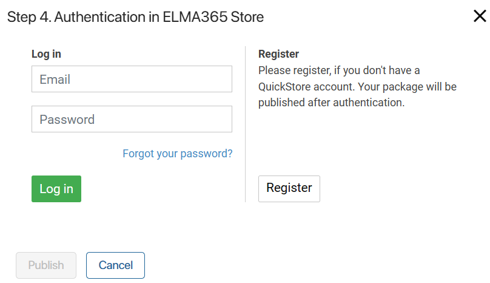

You can export your solution to the official BRIX Store catalog if you are a BRIX partner. The corresponding access is granted after signing an agreement. To become a partner, leave an application on the partner page of the BRIX website or send it to info@brix24.com.
Please note, before exporting the solution, you can allow adding fields to the forms of a locked app as part of it. To do this, configure context extension in the app.
You can export a ready-made solution to the BRIX Store catalog from the system page or via the BRIX Store account.
When exporting your solution to the BRIX Store, you submit an application for publication. The solution will then be checked by BRIX moderators and, if approved, will be published in the catalog. The solution is then available for download to another company.
You can set a fee for using your solution.
Here we will consider exporting the solution from the system page.
Start export
Export the solution to a file in one of two ways:
- On the Administration > Manage Solutions page, on the page of the solution, click the three dots icon and select Export.
- On any system page, in the left menu, click the
 icon and click Solutions. Then to the right of the solution name, click Manage and select Export.
icon and click Solutions. Then to the right of the solution name, click Manage and select Export.

Then in the appeared window click the Start Export button.

Step 1: Solution checking
The first step checks for links to workspace components that are not part of the solution, as well as to global system objects such as organizational chart, processes, system workspaces and apps, modules, and so on.
When exporting a free solution, you will see a warning that users can modify the module included in it after importing it to another company.
You will see a notification if errors are found when checking the links. The solution export will not be available until all links are manually removed.
You will also see a warning if scripts in the solution contain optional dependencies on other workspaces or modules. Such dependencies do not prevent export, but the correct operation of the scripts is not guaranteed when importing the solution later.

If there are no links to global objects, you will see a notification that the check is complete and the solution is ready for export.

Click Next to continue exporting.
Step 2: Select an export option
In the opened window, select the Export to BRIX Store option.

Step 3: Specify information about the solution
In the opened window, enter information about the exported solution.

- Name*. The name of the workspace which will be displayed in the official BRIX Store catalog.
- Description. A description of the features and specifics of the solution.
- Screenshots. Attach the solution screenshots that can illustrate its capabilities.
- Link to video. If necessary, add a link to a video, which demonstrates how to work with this solution.
- Language. Select the language used in the solution.
- Category. Select the categories to which the solution belongs, for example, Contacts, Document Management, CRM, etc.
- Version. If you are exporting a new version of a solution that is already published in the BRIX Store, check the box This is a new version of a Solution that is already available in BRIX Store. In the opened window, specify the URL of an existing solution from the BRIX Store.
- Paid solution. Enable the option if you want to make the solution paid for other users
- Apps included in the solution. Give a brief description of the apps, pages, links, and separators that make up the solution.
To continue exporting, click Next.
Step 4: Sign in to BRIX Store
If you are signed in to the BRIX Store website, click Publish in the appeared window with your company data.

If you are not signed in to the BRIX Store, use an account in BRIX Oauth. To do this:
- In Step 4. Authentication in BRIX Store window, click the BRIX BPM Oauth button.
- In the appeared window, enter your BRIX Oauth account username and password and click Log in. An authorization window with your company details will be displayed.
- Click Publish.
If you don't not have an account in the BRIX Store and BRIX Oauth, please contact your BRIX manager or send a request to info@brix24.com.
After publication, a notification will appear that the solution has been successfully exported.
Moderators will then review the solution. If you enabled the Paid solution option when exporting, the moderators will contact you additionally and provide information on how the solution is activated and paid for.
Once the solution is approved, it will be published in the official BRIX Store catalog. Users will be able to import it into their company.
Found a typo? Select it and press Ctrl+Enter to send us feedback